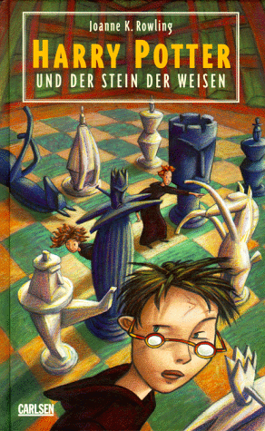
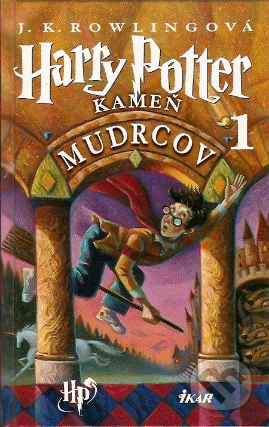

Welcome!
If you have ever taken a foreign language
course, or gone to a website in a foreign language, you have probably tried
google-translating foreign text into English. And you have probably been confused by
the result; we certainly have. In our project, we attempt to discover what in
foreign languages google finds so difficult to translate, and in which languages it
finds more success. The Harry Potter Series
J.K. Rowling is a British novelist and her 7 part Harry Potter series
is the best selling book series of all time. The books have won numerous awards and honors and have sold over 400 million copies worldwide.
They have been translated into dozens of languages.
Harry Potter und der Stein der Weisen
The translator was Klaus Fritz. Cover illustration
by Sabine Wilharm.Harry Potter à l'école des sorciers
Harry Potter, Book 1 was
translated into French by "L'ecole des sorciers" means "the school of wizards." Illustrations by
Jean-Claude Götting.
Harry Potter a Kameň mudrcov
The Slovak cover of the first Harry Potter book. This version was
translated by Jana Petrikovicová. Illustrations by Mary GrandPré.